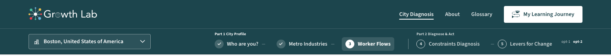
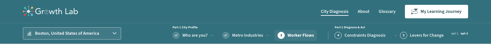
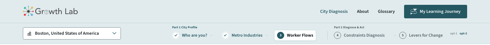
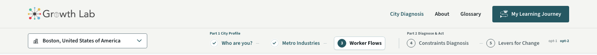

The dark teal bar is heavy: two full-height bands the weight of the teal closes, over the content they introduce. These are the other ways of not being white, each the real bars of v-5 (live, so the chips, the location and the journey button work), each with the contrast it measures. Two of the pale ones used grounds the site already has - the tint its chosen blanks and hovers wear, and the paper its control tray sits on - so nothing new enters the palette. The dark teal and the light bars are here for comparison.
White bars, the teal logo. The reference point.
Ground #ffffff · Part names 7.9 / 6.5 to 1 · Text 6.5 to 1 or better
Both bars in --teal-dark #1c454d with the white logo, as shipped a moment ago. White on it reads 10.5 to 1, and that is the trouble: it is the darkest thing on a page whose figures are the subject.

Ground #1c454d · Part names 10.5 / 7.1 to 1 · Text 7.1 to 1 or better
Keeps the white logo and the colour, at about half the weight: #33707d, the lightest teal that still holds white text at 5.6 to 1. The bolder of the alternatives, and the only one that stays a coloured band.

Ground #33707d · Part names 5.6 / 5.2 to 1 · Text 4.7 to 1 or better · location edge 3.4 to 1
Both bars on --teal-tint #eef3f4, the tint the site already lays under a chosen blank or a hover. The logo stays the teal one; the location becomes a white field and the section you are in a white lifted tile, the same tile the control row uses for its chosen button; the sections behind you wear a check in a white disc; and the journey button, the one filled teal thing on the bar, becomes its accent. It is the quietest way of being coloured.
Ground #eef3f4 · Part names 7.1 / 5.8 to 1 · Text 5.8 to 1 or better · location edge 3.7 to 1
The same, a step deeper: #e1ebed. It reads as colour rather than as off-white, and the white field and tile stand out from it more. The soft grey text is still 5.4 to 1.

Ground #e1ebed · Part names 6.5 / 5.4 to 1 · Text 5.4 to 1 or better · location edge 3.4 to 1
The warm grey the control tray sits on, #f4f5f2: not a teal at all, so the bar recedes furthest and only the logo and the journey button carry colour.

Ground #f4f5f2 · Part names 7.2 / 6.0 to 1 · Text 6.0 to 1 or better · location edge 3.8 to 1
Decided: the Site Layout pill at the bottom left of v-5 offers Light and Tint (1 and 4) as its Navigation bar. The other four are kept here as pictures taken from the live bars; their code is in the repository at commit bf2a67b.